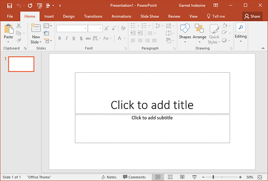

برنامج M.S.PowerPoint
تعريف برنامج البوربوينت:-
برنامج العرض التقديمي هو عبارة عن مجموعة من الشرائح Slides تحتوي على نصوص أو جداول أو رسوم متحركة أو مخططات بيانية.
تشغيل برنامج البوربوينت:-
- الضغط على أيقونة start لعرض القائمة.
- تحريك الفأرة للوصول إلى Programs.
- ظهور قائمة فرعية ثم الضغط على Microsoft PowerPoint.
- تظهر شاشة البرنامج.
المكونات الرئيسية لبرنامج البوربوينت:-
- شريط العنوان ويحتوي على (اسم العرض - اسم البرنامج).
- شريط الأدوات القياسية.
- شريط القوائم.
- شريط أدوات التنسيق.
- شريط الشرائح (الشرائح الحالية).
- أيقونة عرض عادي.
- أيقونة عرض فارز الشرائط.
- أيقونة عرض الشرائح.
- صفحة البيانات (الشريحة الحالية).
بعض المجالات التي تستخدم فيها برامج العروض التقديمية:-
- عرض وشرح الدروس للطلاب.
- التعريف بشركة معينة أو منتج معين في المعارض.
طرق العرض الرئيسية في البوربوينت:-
- العرض العادي Normal View.
- عرض فارز الشرائح Slide Sorter View.
- عرض الشرائح Slide Show View.
استخدامات برنامج البوربوينت:-
يستخدم في عمل العروض التقديمية Presentation.
تشغيل برنامج البوربوينت:
- الضغط على أيقونة start لعرض القائمة.
- تحريك الفأرة للوصول إلى Programs.
- ظهور قائمة فرعية ثم الضغط على Microsoft PowerPoint.
- تظهر شاشة البرنامج.
واجهة البرنامج:-

مكونات البرنامج:
- يتكون البرنامج من مجموعة شرائح Slides.
العروض التقديمية على الشاشة تنقسم إلى:
- عرض تقديمي حي يقدمه المقدم. عن طريق إجراء العرض في غرفة كبيرة باستخدام جهاز عرض ويتحكم المحاضر بشكل كامل في العرض وبإمكانه تشغيل العرض تلقائياً أو يدوياً.
- عرض تقديمي ذاتي التشغيل. هذا العرض يتم تقديمه دون مراقبة في معرض تجاري أو مؤتمر حيث يعد تشغيل العرض التقديمي الذاتي التشغيل عند انتهائه و عند مروره بفترة خمول تتجاوز الخمس ذقائق.